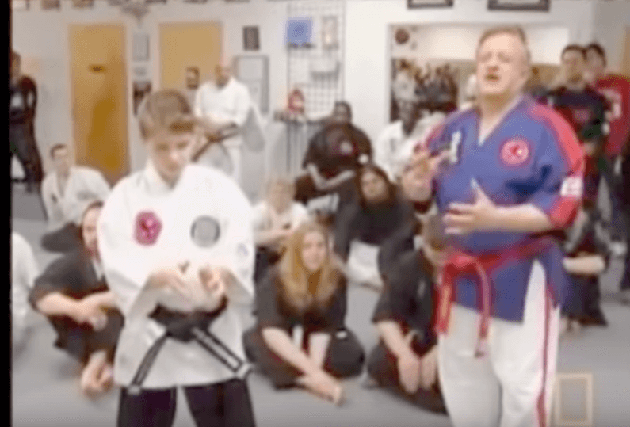
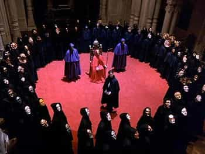

So, you want to learn martial arts: nice choice! It’s a great pastime, not only because it gives you the ability to fight, but also for reasons of fitness, confidence, and mental/spiritual discipline.
With that being said, let’s point out that many—not all, but many—martial arts schools are absolute shit. How do you tell if the school you’ve been prospecting is that eternal subject of mockery amongst MA practitioners, the dreaded “McDojo?”
As luck would have it, there are many easily noticeable signs of the McDojo, and this article will list a few of the most egregious ones.
1. Fatbody Masters And Students
This is probably the biggest one (pun not intended). If the master is a fatty, the school is most likely a crappy one. Just to clarify, I’m not talking about an older master who has gone to seed via the ravages of time, but is still as capable of doing the techniques as he was when he was in his fighting prime. No, I mean a lardo that can’t even do ten regular push-ups, lift his leg above his waist, or hold the horse stance for more than 20 seconds.
This criticism of people who are objectively not in shape goes for the pupils as well. I can tolerate a white belt or the equivalent rank being fat if they’re clearly making an effort to slim down. But if multiple students are fat—and high-level belts in particular are fat—you can clearly see that something is wrong. Just look at the featured image for proof of that.
2. Wildly Impractical Techniques
If fatness is the number one sign of a bad martial arts school, this is undoubtedly the second biggest. Despite what a julienne of hack “masters” will tell you, the martial arts are, in fact, predominantly about kicking another person’s ass. That’s not the only thing they’re good for, of course, but the root word of “martial” is “Mars” for a reason.
The phrase “wildly impractical technique” encompasses a wide spectrum of failure. They range from schools that don’t do any sparring and instead focus entirely on forms, board breaking, and human pyramids—and no, I’m not joking about that last one—to ones that claim to teach their students how to shoot psychic blasts, levitate, or any other sort of magical power that still manages to fool a depressing number of people out there in the world.
Simply ask yourself, “Would these techniques work on a trained fighter?” Or hell, ask yourself, “Would these techniques work on a 15 year old girl that was actively resisting assault?” If not, look elsewhere for training.

Infamous fraud George Dillman actually teaching a child how to form chi balls.
3. Hokey, Overly-Exotic “Asianness”
This one is a little bit more difficult to determine at a glance, but once you notice it, you can’t unsee it. Essentially, this is where a phony school will over-emphasize it’s faux-Oriental bona fides in a vain attempt to give themselves legitimacy. If you see the master walking about in his gi/tangzhuang/whatever in his day-to-day life, or if you notice that he talks in pithy aphorisms that sound like they came off a fortune cookie rather than any actual Eastern philosopher, be wary.
Another sign to watch out for is careless mixing and matching of Asian cultures. This can be as egregious as a “kung fu” school having its students wear karate gis and referring to itself as a dojo, or something subtle like a “Shaolin Kung Fu” school having Taoist tchotchkes on the wall (the Shaolin monastery, being Buddhist, would never do such a thing).
Similarly, beware any overly grandiose claims about the lineage of the school. If the master claims that he or a previous master of the school honed their skills fighting jiangshis in the bamboo forests of Hunan, killing the hopping devils with their dim mak powers, you can rest assured that they’re pulling that nonsense out of their asses. I love kung fu flicks and schlocky video games as much as the next guy—if not a little bit more—but I’m also an adult man and I can separate fantasy from reality.
4. General Unprofessionalism
This phrase incorporates a wide variety of bad behaviors, most of which should be familiar to anybody who works a 9-to-5 job dealing with dysfunctional people. For example, if the master is having sexual intercourse with one of his female students—especially if said student is underage—that’s clearly something you ought to watch out for.
A form of unprofessionalism that I’ve noticed is specific to bad martial arts schools are occasions where the master will deliberately inculcate a sort of cult-like atmosphere, engendering slavish devotion amongst his students and in some cases even trying to separate them from their families, largely for the purposes of either bilking money from them or sexually exploiting them.

While I have said that many martial arts schools are crap, there are many good ones that will teach you real, practical techniques out there. If you want to determine whether your prospective school is bad, I find that the best way to do so is to simply ask to observe a class or two. All schools worth a damn—and even many that aren’t—will allow outsiders to see the proceedings, and in some hilarious cases even allow you to attack the fake “master.”
And if they refuse to allow it, that’s probably the best sign that the school isn’t worth your time.
Read More: How To Choose A Style Of Martial Art To Study